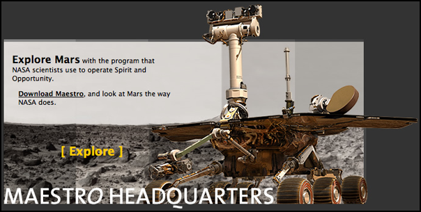
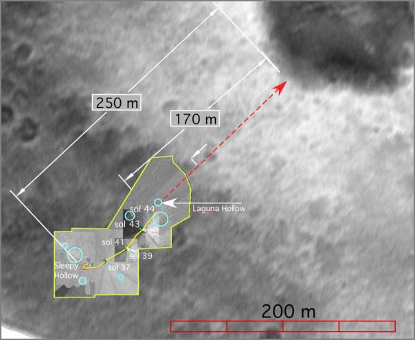
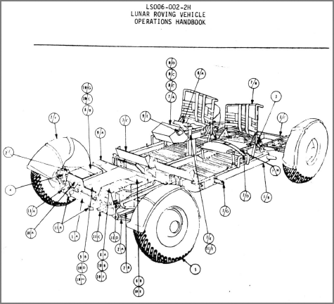
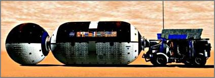
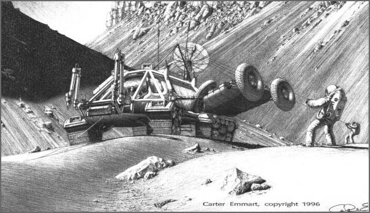

02.29.2004 12:00
Leap day
Who could resist a weblog on leap
day?!?!
Still hard at work on MER. There are 12 days left before I'm done with full time on the mission. Then some vacation (what's that?). Then back to my thesis and probably TA'ing Erth001 (The Planets) if Catherine will let me.
I started setting up my own mysql/php server for my thesis. I've picked up a ton from Aurelio, but I'm still in the novice state. Haven't done any true database stuff since New Orleans. The possibilities are awesome.
Sun News - Features - Java Technology and the Mission to Mars. I'm going to have to find some time to comment on this with my personal opinions. Definitely needs some serious clarification! Especially JAI! Q&A with James Gosling:
ipnsig - Interplanetary internet. Aka return of uucp. I really need to publish my communication protocol from way back when with Nomad/CMU. I've noticed that there are some similarities to what is used with MER.
Still hard at work on MER. There are 12 days left before I'm done with full time on the mission. Then some vacation (what's that?). Then back to my thesis and probably TA'ing Erth001 (The Planets) if Catherine will let me.
I started setting up my own mysql/php server for my thesis. I've picked up a ton from Aurelio, but I'm still in the novice state. Haven't done any true database stuff since New Orleans. The possibilities are awesome.
Sun News - Features - Java Technology and the Mission to Mars. I'm going to have to find some time to comment on this with my personal opinions. Definitely needs some serious clarification! Especially JAI! Q&A with James Gosling:
Q:What exactly is Java's role in the Mars Rover mission? . A: The places where NASA scientists have used Java for this mission is all on the ground side right now. They have created this collaborative command and control system called Maestro, which does this combination of data visualization, collaboration, command and control. It lets them look at images and create 3-D reconstructions of terrain. It allows various experimenters to look at the scenes and topography, browse the image databases and take part in all the participation they need to do. And to do it in a remote, distributed and collaborative kind of way - so they could actually have scientists at institutions all over the world who are not only looking at the data, but also collaboratively deciding on the way the mission should proceed. One of the nice things that the JPL guys have done is that they've made a "cleaned up for civilians" version of this application available that's called Maestro. . Q:How is the Java assisting in controlling the Rover from earth? . A: There's a Java API called Java Advanced Imaging, that's used for the images captured by the panoramic camera - the one that producing images with excruciating detail. Those panoramas are being created by combining images from two different cameras onboard the Rover, so with the two lenses they get two images - just like you've got two eyes - so you can do a stereoscopic mapping where your brain is able to figure out how far away things are. Because they've got these stereoscopic images, they can go through a process that's called stereo-image correlation, so they can calculate for each pixel in the image how far away that picture element really is. . With this information, the JPL scientists can calculate how far away each rock is, each picture element, for all of the millions of pixels in one of these large images. So you can get the depth of the image at every point. That's what a stereo camera gives you. When you've got the depth information, you can then actually build a 3-D model, the actual model of the terrain. And then you can actually map the image back onto the 3-D model. So then what you've got is a colored, three-dimensional model of the world around you. ...Maestro... haven't tried it yet. http://mars.telascience.org/ What really is this thing? The web page doesn't say. Is it SAP, or Wits, or something totally different? Is it a JPL product or no? Is this from Paul Backus?

ipnsig - Interplanetary internet. Aka return of uucp. I really need to publish my communication protocol from way back when with Nomad/CMU. I've noticed that there are some similarities to what is used with MER.
02.18.2004 12:00
Macos upgrade from 10.1 to 10.3
Did another test run of fink with
10.3 since friday, I wiped schwehr.org (was 10.1, yuck!) and it
works great. I was able to build all the way through to soqt
without error. But have not yet tested viewer. As soon as that is
done, release6 will be good to go.
02.18.2004 12:00
MER Spirit Map
Yesterday was great press conference
(in my oppinion 
PIA05317: Spirit's Path to Bonneville
PIA05317: Spirit's Path to Bonneville

02.13.2004 12:00
NASA Open Source License
NASA Open Source
License - Looks like they may be streamlining the process.
Might be a good way to keep old code from dying. Lots of it has no
real commercial value, but could help other open source products.
Wonder how the licenses will interact. Could get messy.
02.07.2004 12:00
Basics of Space Flight, James Pipeline
Wow. My first whole weekend off.
Okay, so I know the mobility and sequencing guys are not getting
too many days off. And yes, I'm working on several things this
weekend, e.g. iSight programming, SpaceMouse driver, and an AIM
client. Oh, and getting my rental car changed back to a Toyota
Echo. Can't wait. 40 mpg and fun to drive.
Basics of Space Flight is a JPL tutorial for JPL people. Maybe this is what they should have given me at my orientation meeting rather than telling me about the cafeterias!
I tried to write part of my own tutorial after Mars98/Mars Polar Lander. You can find it here: Stereo Processing for the Mars Polar Lander, MVACS Image Pipeline / James Pipeline. But it is focused more on the image processing end of things. It only touches on things like CCSDS telemetry, SFDU's, APID's, and the telemprocs. Hopefully I'll be able to write a next one after this mission. There is still tones that I don't know about on this mission. I've got to do things like talk to Doug about how his imaging pipeline works. All I really know is that it uses bash for control and has a 1D stereo collator in it.
2008 Update: Found this paper... Photo-realistic terrain modeling and visualization for Mars Exploration Rover science operations
For yesterday's press conference we showed the RAT brush being uses to get rid of dust off of a small spot on the rock Adirondack. I was walking by the RAT room when Steve S. walked in there and first saw the image. Wow did he let out a whoop. That was definitely was a cool image. I then got to help register the two microscopic images for the press conference. This was our first use of the PanCam teams IDLvm code for altering images. We ran out of time, so I took the semi close images and did the last couple steps in Photoshop. I had to quick learn from Kris how to rotate just a layer in Photoshop CS since there was about a 1 degree rotation between frames. Have to use the rotate under Edit. Then I did the crop for the blink (where Shigeru uses Final Cut Pro to jump back and forth between images). Shigeru did a great zoom out to the whole brushed image.
Basics of Space Flight is a JPL tutorial for JPL people. Maybe this is what they should have given me at my orientation meeting rather than telling me about the cafeterias!
I tried to write part of my own tutorial after Mars98/Mars Polar Lander. You can find it here: Stereo Processing for the Mars Polar Lander, MVACS Image Pipeline / James Pipeline. But it is focused more on the image processing end of things. It only touches on things like CCSDS telemetry, SFDU's, APID's, and the telemprocs. Hopefully I'll be able to write a next one after this mission. There is still tones that I don't know about on this mission. I've got to do things like talk to Doug about how his imaging pipeline works. All I really know is that it uses bash for control and has a 1D stereo collator in it.
2008 Update: Found this paper... Photo-realistic terrain modeling and visualization for Mars Exploration Rover science operations
Edwards, L.; Sims, M.; Kunz, C.; Lees, D.; Bowman, J. Systems, Man and Cybernetics, 2005 IEEE International Conference on Volume 2, Issue , 10-12 Oct. 2005 Page(s): 1389 - 1395 Vol. 2 Digital Object Identifier 10.1109/ICSMC.2005.1571341 Summary: Modern NASA planetary exploration missions employ complex systems of hardware and software managed by large teams of engineers and scientists in order to study remote environments. The most complex and successful of these recent projects is the Mars Exploration Rover mission. The Computational Sciences Division at NASA Ames Research Center delivered a 3D visualization program, Viz, to the MER mission that provides an immersive, interactive environment for science analysis of the remote planetary surface. In addition, Ames provided the Athena Science Team with high-quality terrain reconstructions generated with the Ames Stereo-pipeline. The on-site support team for these software systems responded to unanticipated opportunities to generate 3D terrain models during the primary MER mission. This paper describes Viz, the Stereo-pipeline, and the experiences of the on-site team supporting the scientists at JPL during the primary MER mission.
For yesterday's press conference we showed the RAT brush being uses to get rid of dust off of a small spot on the rock Adirondack. I was walking by the RAT room when Steve S. walked in there and first saw the image. Wow did he let out a whoop. That was definitely was a cool image. I then got to help register the two microscopic images for the press conference. This was our first use of the PanCam teams IDLvm code for altering images. We ran out of time, so I took the semi close images and did the last couple steps in Photoshop. I had to quick learn from Kris how to rotate just a layer in Photoshop CS since there was about a 1 degree rotation between frames. Have to use the rotate under Edit. Then I did the crop for the blink (where Shigeru uses Final Cut Pro to jump back and forth between images). Shigeru did a great zoom out to the whole brushed image.
02.03.2004 12:00
Lunar Rover Handbook
droplet - Amateur Microscope
Pics of protozoa. Thanks to Warren Smith for this link.
Going back to Apollo, here is the Lunar Rover Operations Handbook. I wouldn't mind it if I had to use this to figure out how to strap a map on the fender...
There was no press conference today so I sort of had the day off. Yesterday was a 16 hour day. Spend a ton of time working on recoding videos using the 3ivx.com codec. Pretty cool for a free program. Shegiru is in the habit of giving me 16 GB raw quicktimes. Thank goodness for firewire drives.
Going back to Apollo, here is the Lunar Rover Operations Handbook. I wouldn't mind it if I had to use this to figure out how to strap a map on the fender...

There was no press conference today so I sort of had the day off. Yesterday was a 16 hour day. Spend a ton of time working on recoding videos using the 3ivx.com codec. Pretty cool for a free program. Shegiru is in the habit of giving me 16 GB raw quicktimes. Thank goodness for firewire drives.
02.02.2004 12:00
Hematite and water on Mars
A
Case for Hydrothermal Gray Hematite in Aram Chaos [pdf] - why
some folks think that hematite may be related to water on Mars.
Thanks to Peter Selkin for the pointer and D. Eberl for the
original link.
The Thermal Emission Spectrometer (TES) on Mars Global Surveyor has detected deposits of coarsegrained, gray crystalline hematite in Sinus Meridiani, Aram Chaos, and Vallis Marineris [1]. Detailed features in the hematite spectral signature of the Sinus Meridiani region show that the spectrum is consistent with emission dominated by crystal c-faces of hematite, implying that the hematite is specular [2]. Gray specular hematite (also known as "specularite") is a particular gray crystalline form that has intergrown, hexagonal plates with a silvery metallic luster. We believe that the key to the origin of specularite is that it requires crystallization at temperatures in excess of about 100°C. In reviewing the occurrence of gray hematite on Earth, we find no exceptions to this warm temperature requirement [3]. Thermal crystallization on Mars could occur (1) as diagenesis at a depth of a few kilometers of sediments originally formed in lowtemperature waters, or (2) as direct precipitation from hydrothermal solution. Aram Chaos has unique chaotic terrain that offers more clues to the formation of the hematite than the relatively featureless flat terrain (as seen from orbit) of Sinus Meridiani. Aram Chaos provides the opportunity to look at a combination of TES data, Mars Orbiter Camera images, and Mars Orbiter Laser Altimeter (MOLA) topography. This combination of data suggests that high concentrations of hematite were formed in planar strata and have since been exposed by erosion of an overlying light-toned, caprock. Lesser concentrations of hematite are found adjacent to these strata at lower elevations, which we interpret as perhaps a lag deposit. The topography and the collapsed nature of the chaotic terrain favor a hydrothermally charged aquifer as the original setting where the hematite formed. An alternative sedimentary origin requires post-depositional burial to a depth of ~3-5 km to induce thermally driven recrystallization of fine-grained iron oxides to coarse-grained hematite.
02.01.2004 12:00
Mars Reference Mission
Mars Reference
Mission renderings - funded by Cameron
Also, check out Carter Emmart's Mars exploration illustrations. It was great getting to sit one office away from him in 1993. Mars Exploration Artwork by Carter Emmart

Also, check out Carter Emmart's Mars exploration illustrations. It was great getting to sit one office away from him in 1993. Mars Exploration Artwork by Carter Emmart
